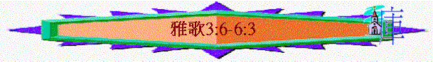

|
引言 |
看重的愛 |
同在的愛 |
甘甜的愛 |
等待的愛 |
同享的愛 |
超越的愛 |
雙向的愛 |
堅強的愛 |
保護的愛 |
結語 |
|
|
1:1-4 |
1:5-11 |
1:12-17 |
2:1-6 |
2:7-3:5 |
3:6-5:1 |
5:2-6:3 |
6:4-8:5 |
8:6-7 |
8:8-12 |
8:13-14 |
|
五.同享的愛(3:6-5:1)
〜此段似乎描述良人迎娶佳偶及他們初夜的甜蜜經過
〜用了很多「園」「園內」「園中」及香料，果子表達一同享受的感覺
1.二人的享受(3:6-5:1a)
A.眼目的喜悅
a.
眾人喜見良人
〜此段良人坐轎迎取佳偶，眾人(包括佳偶見到良人時，似乎十分喜悅，叫身旁的人「看哪」
(1)商人的榮華
「那從曠野上來、形狀如煙柱、以沒藥和乳香並商人各樣香粉薰的是誰呢？」3:6
「所羅門王用利巴嫩木為自己製造一乘華轎。」3:9
〜所羅門王來到時，如商人榮華一般，有各樣香粉薰的，也有華橋
(2)君王的氣勢
「那從曠野上來、形狀如煙柱、以沒藥和乳香並商人各樣香粉薰的是誰呢？看哪，是所羅門的轎；四圍有六十個勇士，都是以色列中的勇士。」3:6-7
〜「形狀如煙柱」表達行列在沙地行走時所掀起的煙塵
〜所羅門王來到，有六十個勇士，善於爭戰的精兵陪伴他，而他也帶著冠冕，表達王者的風範
(3)萬人的愛慕
「轎柱是用銀做的，轎底是用金做的；坐墊是紫色的，其中所鋪的乃耶路撒冷眾女子的愛情。」3:10
〜王坐的轎，轎底的坐墊所舖的乃是耶路撒冷眾女子的愛情，此乃比喻，比喻所羅門王受女子所愛慕，她們自願服侍王，為王預備坐墊。
(4)佳偶的雀躍
「錫安的眾女子啊，你們出去觀看所羅門王！頭戴冠冕，就是在他婚筵的日子、心中喜樂的時候，他母親給他戴上的。」3:11
〜我們的主也何等令人喜悅，雀躍，有一日，祂騎著白馬回來，有眾王軍陪伴，祂來要作世上的王，人見到祂，也要俯伏敬拜，愛慕祂！
b.良人賞悅佳偶
〜良人來到佳偶面前，可能已是迎娶的那一夜，他欣賞讚歎佳偶的胴體
(1)合式的眼睛
「我的佳偶，你甚美麗！你甚美麗！你的眼在帕子內好像鴿子眼。你的頭髮如同山羊群臥在基列山旁。」4:1
「他的眼如溪水旁的鴿子眼，用奶洗淨，安得合式。」5:12
〜鴿子的眼，黑白分明，安得合式，佳偶的眼也一樣
(2)黑秀的頭髮
「如同山羊群」巴勒斯坦的山羊都是黑色，而卧在基列山上，比喻佳偶的頭髮，是黑色而飄然垂下，如在基列山上飄下。
(3)無瘕的牙齒
「你的牙齒如新剪毛的一群母羊，洗淨上來，個個都有雙生，沒有一隻喪掉子的。」4:2
〜「雙生」「沒有一隻喪掉」「洗淨」代表牙齒潔白完美
(4)秀美的朱唇
「你的唇好像一條朱紅線；你的嘴也秀美。你的兩太陽在帕子內，如同一塊石榴。」4:3
(5)紅潤的前額
〜兩「太陽」或作前額，如石榴般紅潤
(6)高貴的頸項
「你的頸項好像大衛建造收藏軍器的高臺，其上懸掛一千盾牌，都是勇士的籐牌。」4:4
〜「軍器」「高臺」表達修直及高貴
(7)嬌嫩的兩乳
「你的兩乳好像百合花中吃草的一對小鹿，就是母鹿雙生的。」4:5
〜「百合花」「母鹿雙生的」「小鹿」比喻佳偶的兩乳平均，嬌嫩
〜當愛一個人的時候，就會看她全然美麗，正如主也喜悅屬祂的人，看我們為聖徒(雖然我們也有軟弱)
B.合一的滿足
〜4:6-5:1a談及他們在初夜中的滿足，用很多形容詞表達二人合一「性」上的享愛，而當中「你的」「我的」已是互相調亂，再沒分彼此，的確，在愛中，二人可享受身心靈合一的快樂！(信徒也應同正確的心態去看)
a.良人的主動
(1)身體的接觸
「我要往沒藥山和乳香岡去，直等到天起涼風、日影飛去的時候回來。」4:6
「我妹子，我新婦，乃是關鎖的園，禁閉的井，封閉的泉源。」4:12
「有哪噠和番紅花，菖蒲和桂樹，並各樣乳香木、沒藥、沉香，與一切上等的果品。」4:14
〜4:12及4:14題及園子、乳香、沒藥，都是形容佳偶的身體，良人似乎不單享受眼目的滿足，也望整日（等到天起涼風，日影飛去，黎明的來臨
)能享受與佳偶身體的接觸。
(2)一同起行
「我的新婦，求你與我一同離開利巴嫩，與我一同離開利巴嫩。從亞瑪拿頂，從示尼珥與黑門頂，從有獅子的洞，從有豹子的山往下觀看。」4:8
〜「亞瑪拿」「示尼珥」「黑門頂」是高峰，良人在與佳偶肉體接觸中，更重題之前望她能與自己離開娘家(黎巴嫩)，脫離如獅子洞，豹子山的恐懼，與他出外同行。
b.心身的滿足
(1)心靈的讚歎
「我妹子，我新婦，你奪了我的心。你用眼一看，用你項上的一條金鍊，奪了我的心！我妹子，我新婦，你的愛情何其美！你的愛情比酒更美！你膏油的香氣勝過一切香品！」4:9-10
〜佳偶已奪了良人的心，不單是她讚賞良人的愛情，良人也感覺她的愛情勝過美酒及膏油
(2)肉體的滿足
「你園內所種的結了石榴，有佳美的果子，並鳳仙花與哪噠樹。有哪噠和番紅花，菖蒲和桂樹，並各樣乳香木、沒藥、沉香，與一切上等的果品。你是園中的泉，活水的井，從利巴嫩流下來的溪水。（新娘）」4:13-15
〜「關鎖的園」表達女子仍是處女，但現今如井、泉源、園中的果實，樹木而來的香料供良人享受。
C.佳偶的渴求
「北風啊，興起！南風啊，吹來！吹在我的園內，使其中的香氣發出來。願我的良人進入自己園裡，吃他佳美的果子。」4:16
〜不單是良人的主動，佳偶也求無論清涼的「北風」或溫暖的「南風」也都能吹送，使其園中的香氣(自己)發出來，吸引良人享受。
〜而原本由佳偶--「我的園子」也代入為良人「自己園�堙v，他們已不分彼此了！
〜在新天新地中，信徒是沒有嫁娶的，但教會與基督，萬物合而為一，再沒分彼此，一同得著最高的榮耀及真正的滿足！
2.眾人的同樂(5:16)
「我妹子，我新婦，我進了我的園中，採了我的沒藥和香料，吃了我的蜜房和蜂蜜，喝了我的酒和奶。（耶路撒冷的眾女子）我的朋友們，請吃！我所親愛的，請喝，且多多的喝！」5:1
〜新郎新娘不單二人享受快樂，也願眾人在婚宴中一同快樂！
六.超越的愛(5:2-6:3)
〜前段題及他們在愛中的享受，但愛情路上不是沒有困難的，此段講述有重重的障礙，但在愛中可以至終超越的！
1.個人的軟弱(5:2-3)
「我身睡臥，我心卻醒。這是我良人的聲音；他敲門說：﹝新郎﹞我的妹子，我的佳偶，我的鴿子，我的完全人，求你給我開門；因我的頭滿了露水，我的頭髮被夜露滴濕。（新娘）我回答說：我脫了衣裳，怎能再穿上呢？我洗了腳，怎能再玷污呢？」5:2-3
〜良人想進入房間，但佳偶因種種個人理由(似乎不是理由的理由)，諸多推唐，不肯開門
2.愛人的消失(5:4-6)
「我起來，要給我良人開門。我的兩手滴下沒藥；我的指頭有沒藥汁滴在門閂上。我給我的良人開了門；我的良人卻已轉身走了。他說話的時候，我神不守舍；我尋找他，竟尋不見；我呼叫他，他卻不回答。」5:5-6
〜當佳偶想開門時，卻發現良人己轉身走了，尋找卻尋不見，呼叫卻沒有回應
3.肉身的苦難(5:7-8)
A.被打
「城中巡邏看守的人遇見我，打了我，傷了我；看守城牆的人奪去我的披肩。」5:7
〜在尋找所愛過程中，遇到苦難，被看守的人打傷
B.成病
「耶路撒冷的眾女子啊，我囑咐你們：若遇見我的良人，要告訴他，我因思愛成病。（耶路撒冷的眾女子）」5:8
4.別人的挑戰(5:9-16)
A.質問—他有何強處？
「你這女子中極美麗的，你的良人比別人的良人有何強處？你的良人比別人的良人有何強處，你就這樣囑咐我們？（新娘）」5:9
〜週圍的人問佳偶，為何令自己如此苦，良人有甚麼吸引及強處值得妳這樣思愛成病
B.肯定----所愛的超越！
「我的良人白而且紅，超乎萬人之上。」5:10
「燈臺中間有一位好像人子，身穿長衣，直垂到腳，胸間束著金帶。他的頭與髮皆白，如白羊毛，如雪；眼目如同火焰；腳好像在爐中鍛煉光明的銅；聲音如同眾水的聲音。他右手拿著七星，從他口中出來一把兩刃的利劍；面貌如同烈日放光。」啟1:13-16
「我觀看，見天開了。有一匹白馬，騎在馬上的稱為誠信真實，他審判，爭戰，都按著公義。他的眼睛如火焰，他頭上戴著許多冠冕；又有寫著的名字，除了他自己沒有人知道。他穿著濺了血的衣服；他的名稱為神之道。在天上的眾軍騎著白馬，穿著細麻衣，又白又潔，跟隨他。」啟19:11-14
〜佳偶不因人的疑問，令自已對良人的感覺有動搖，反而更肯定良人超乎萬人之上。
〜我們的主何尚不是，是萬有之首，超乎眾人，是神的長子！
a.他本身----白而且紅
〜人的皮膚如單是白，會顯得蒼白，但良人卻白而且紅，我們的主有潔白的形象，沒有罪污，而且更有血(紅)的印記，為人流血犧牲！
b.他的頭----至精金子
「他的頭像至精的金子；他的頭髮厚密纍垂，黑如烏鴉。」5:11
〜表達高貴，我們的主頭上也有冠是，祂是萬王之王，萬主之首，更是教會之頭！
c.他的髮----黑如烏鴉
〜表示年青，頭髮也沒有稀疏，反而厚密，我們的主也是長遠活著，常帶著能力的！
d.他的眼----安得合式
「他的眼如溪水旁的鴿子眼，用奶洗淨，安得合式。」5:12
〜主的眼如火，能察驗人的心，祂的眼也帶有溫柔，憐憫，能感動彼得看清自己的罪而回轉。
e.他的口----何等馨香
「他的兩腮如香花畦，如香草臺；他的嘴唇像百合花，且滴下沒藥汁。」5:13
「他的口極其甘甜；他全然可愛。耶路撒冷的眾女子啊，這是我的良人；這是我的朋友。」5:16
〜用「香花畦」「香草」「百合花」「沒藥汁」代表馨香，主的口也常帶恩言，能安慰人的心！
f.他的手----堅穩寶貴
「他的兩手好像金管，鑲嵌水蒼玉；他的身體如同雕刻的象牙，周圍鑲嵌藍寶石。」5:14
〜「金管，鑲嵌水蒼玉」名貴而堅穩，主的手也大有能力，平靜風浪，祂的手能扶起沉在水中的彼得，也保守人不失腳，對信徒來說是拯其穩妥大能的手！
g.他身體----華麗名貴
「他的兩手好像金管，鑲嵌水蒼玉；他的身體如同雕刻的象牙，周圍鑲嵌藍寶石。」5:14
〜「象牙」「藍寶石」表達華麗名貴，主在登山變象，祂的身體也改變，吸引門徒覺得「在這�堹u好」！
h.他的腳----強壯尊貴
「他的腿好像白玉石柱，安在精金座上；他的形狀如利巴嫩，且佳美如香柏樹。」5:15
〜「白玉石柱」「精金」表代尊貴、至高、美麗，香柏樹代表強壯，主的腳蹤何等佳美，祂走遍各城各鄉傳揚神的道，到末後，祂也要踐踏祂的仇敵，萬有都伏在祂腳下。
C.自豪----他是我良人
「他的口極其甘甜；他全然可愛。耶路撒冷的眾女子啊，這是我的良人；這是我的朋友。」5:16
〜佳偶不因人的問題而感到退縮，反而因良人超乎萬人之上而感到自豪，介紹其他人認識他是我所愛的良人，也是我的朋友！
5.至終的超越(6:1-3)
A.感動他人
「你這女子中極美麗的，你的良人往何處去了？你的良人轉向何處去了，我們好與你同去尋找他。（新娘）」6:1
〜其他週圍的人聽到佳偶的說話，也受感動，願意幫助她尋回良人
B.至終尋回
「我的良人下入自己園中，到香花畦，在園內牧放群羊，採百合花。」6:2
C.重建關係
「我屬我的良人，我的良人也屬我；他在百合花中牧放群羊。」6:3
〜「我屬我的良人，我的良人也屬我」表達出一種再不分離，沒甚麼事情可分隔，彼此相屬緊密的關係
〜我們在信仰路上，也遇很多挑戰，令我們退後，不愛主，但主應許我們會愛我們到底，永不離開我們，主的愛也可感動我們重新起來，超越重重困難，竭力再跟隨主！